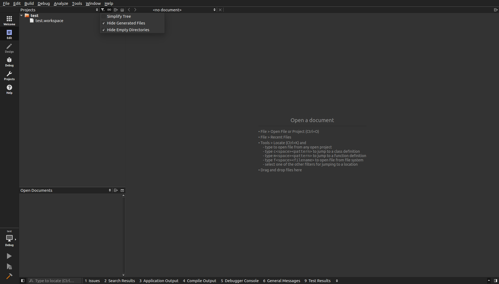

The code used in this tutorial is available!
Code can be found at ros_qtc_plugin repository in gh_pages folder. Use 4.4 branch.
Frequently Asked Questions¶
This wiki highlights the frequently asked questions on the issue tracker.
- How to show empty folders?
- Are new files automaticly added to the CMakeLists.txt file?
- Warning: This file is not part of any project.?
How to show empty folders?¶
By default Qt Creator hides empty folders. In the above image you can see that the workspace src folder is not shown. Under the project filters uncheck Hide Empty Directories.
Are new files automaticly added to the CMakeLists.txt file?¶
Currently it is the developers responsibility to edit the CMakeLists.txt file.
Warning: This file is not part of any project.?¶
This can be for several reason.
- The workspace has not been built from within Qt Creator. Specific flags are passed to cmake which create specific project files which the IDE can parse to build a code model.
- The file or files have not been added to the CMakeLists.txt file followed by a build from within Qt Creator.
- Sometime is persist event if you address the previous items, but if code following is working then it should be ignored.
Open Source Feedback
See something that needs improvement? Please open a pull request on this GitHub page